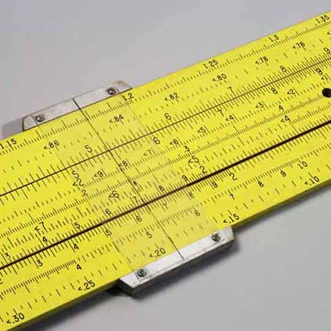
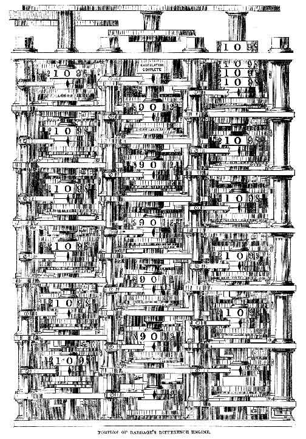
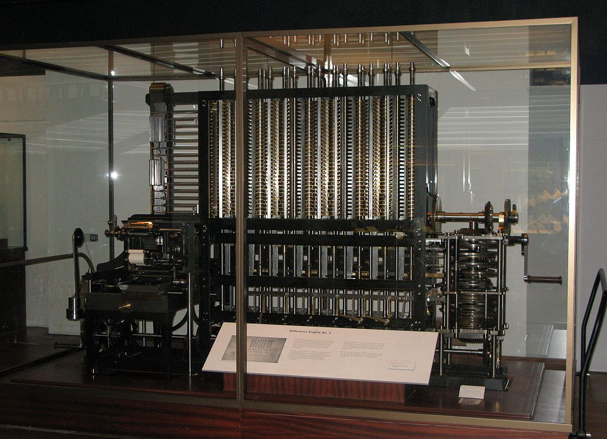
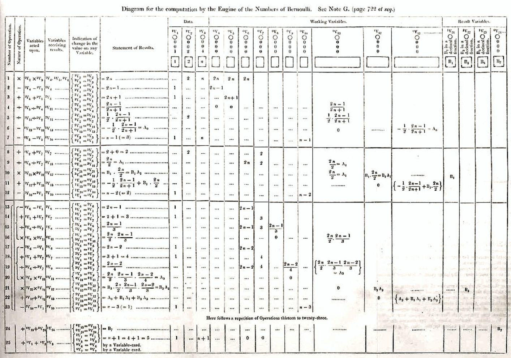
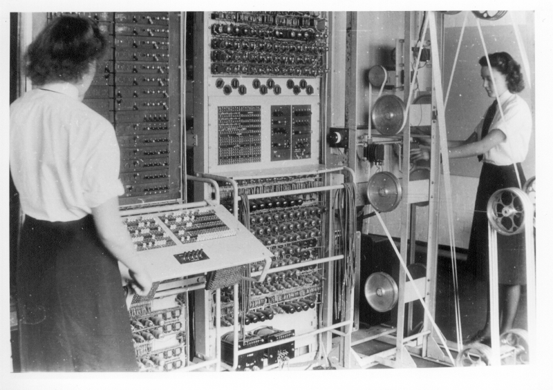
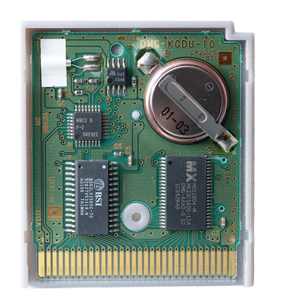
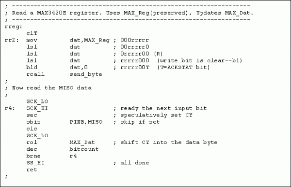
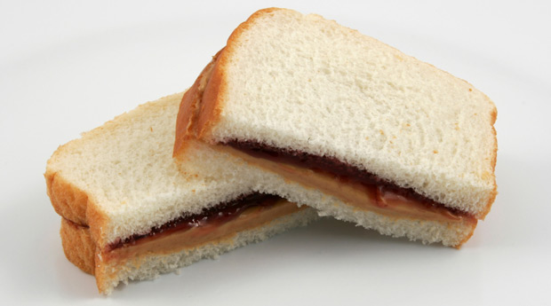

##Welcome!
Girl Develop It is here to provide affordable and accessible programs to learn software through mentorship and hands-on instruction.
###Things to keep in mind:
* We are here for you!
* Every question is important
* Help each other
* Have fun!
##Getting to Know You
1. What's your name?
2. What do you want to take from this class?
3. What's your favorite movie?
What We'll Be Covering:
The History of Computing
How Computers Think
How Programming Languages Developed
Basic Programming Concepts
What Should I Do Next?
Computation: The Early Years
Computation: The Early Years

Examples of some early analog calculators.
Computation: The Early Years

Diagram of Charles Babbage's Difference Engine.
Computation: The Early Years

An actual difference engine built out.
Computation: The Early Years

A program for the computation of Bernoulli numbers designed for the analytical engine.
Computation: The Early Years
Our Lady of Conceptual Programming, Ada Lovelace
Computation: The Early Years
Analytical Engine per Sydney Padua's The Thrilling Adventures of Lovelace and Babbage.
Computation: The Early Years

Programmers working with the Colossus, a Nat-zee code-breakin' machine and one of the first digital computers.
How Do Computers Do Their Thinking?
How Computers Think
Computers have three types of memory — Read-Only Memory,
Hard Drive Memory, and Random Access Memory.
How Computers Think: ROM
ROM, or Read-Only Memory, is hardwritten
into chips and handles data essential to a computer's operation.
How Computers Think: ROM
Cartridge-based video games are a small example of read-only memory.

How Computers Think: ROM
How Computers Think: ROM
Read-Only Memory functions similarly to the brainstem.
(I'm sorry...)
How Computers Think: Hard Drive Memory
Hard Drive Memory is editable memory that
holds files and programs that you create and install.
How Computers Think: Hard Drive Memory
How Computers Think: RAM
How Computers Think: RAM
RAM, or Random Access Memory
is volatile memory that handles data that the computer is actively using.
How Computers Think: RAM
How Computers Think: RAM
RAM is like our working memory.
How Computers Think: A Review
ROMhandles data that's essential for device operation
Hard Drive handles hardwritten, saved data.
RAM handles data your computer is using.
How Computers Think
How Do We Talk To Computers?
The Evolution of Programming Languages
First Generation: Machine Code
Second Generation (1949): Assembly Code
Third Generation (Late 1950s): High-Level Language
Fourth Generation (1980s): Even Higher-Level Language
How We Talk To Computers: The First Generation
Machine code, is the straight-up use
of binary as a means of programming.
How We Talk To Computers: The First Generation
How We Talk To Computers: The Second Generation

How We Talk To Computers: The Second Generation
Assembly code is code that
uses chunks of text as symbols for specific processes.
Our Lady of Code Compilation, Grace Hopper
How We Talk To Computers: The Third Generation
Third-generation languages are languages
that machine-independent and whose syntax is abstracted and
reads in a much more human fashion.
Before / Assembly
section .text
global _start ;must be declared for linker (ld)
_start: ;tell linker entry point
mov edx,len ;message length
mov ecx,msg ;message to write
mov ebx,1 ;file descriptor (stdout)
mov eax,4 ;system call number (sys_write)
int 0x80 ;call kernel
mov eax,1 ;system call number (sys_exit)
int 0x80 ;call kernel
section .data
msg db 'Hello, world!',0xa ;our dear string
len equ $ - msg ;length of our dear string
The best thing about computers is that they will do exactly what you tell them to do.
The worst thing about computers is that they will do exactly what you tell them to do.
How To Talk To Computers: A Demo

How To Talk To Computers: A Demo
Let's Talk To Computers!
Let's Talk To Computers: Concepts
We'll be covering
Variables,
Conditionals, and
Loops!
Let's Meet the Terminal!
The terminal is a space where we
run chunks of code and test them to make sure that it's behaving in
the way we want it to.
For this course, we'll be making use of an online terminal named repl.it.
Let's Talk To Computers: Variables
A variable is essentially a storage container for information.
Examples:
var myName = "Lauren";
var myQuest = "To find the Holy Grail";
var myFavoriteColor = "orange";
Variables come in several flavors, but here we'll be covering Numbers, Strings, and Booleans.
Variable Types: Numbers
Variables can be used to store numbers
Variable Types: Numbers
Variables can be used to store numbers.
var bookQuantity = 2;
var bookPrice = 20;
var bookDiscount = 0.41;
Variable Types: Strings
Variables can also be used to store text.
Variable Types: Strings
Variables can also be used to store text.
var bookTitle = "Romeo and/or Juliet: A Chooseable-Path Adventure";
var bookAuthor = "Ryan North";
Usually when a string is created in a program, it's surrounded by quotation marks.
Variable Types: Numbers as Strings
You can store numbers as a string variables too!
This is best used for numbers that aren't/shouldn't be used in mathematical
equations. Numbers can also become part of strings if directly added to them.
var jennysNumber = "8675309";
Variable Types: Booleans
Variables can also be used to store TRUE or FALSE as a value.
Variable Types: Booleans
Variables can also be used to store TRUE or FALSE as a value.
var loggedIn = false;
var primeMember = false;
You can define a condition, then use a Boolean to tell the computer whether that condition is true or false.
Variable Ability #1
The value of variables can be updated over the course of a program.
Variable Ability #1
Variable Ability #1
var kittyVillagePopulation = 1;
console.log(kittyVillagePopulation);
kittyVillagePopulation = 0;
console.log(kittyVillagePopulation);
cart_total = 8
if cart_total > 2
print "You get free shipping!"
end
Change the numbers to see what happens.
Change the operators (greater than, less than, etc.)
Let's Try If/Else: Part 2
cart_total = 8
if cart_total > 2
print "You get free shipping!"
else
print "Sorry buddy, gotta pay for shipping..."
end
Manipulate the elements to see what happens.
Interlude: What's all this white space?
One nice thing about some newer languages is that it looks similar to writing English.
However, when dispensing with punctuation, the computer substitutes indentation to make that
actions execute correctly and in the right order.
And now, a break for one of those programming jokes...
A programmer's partner sends them to go pick up some groceries, asking
them to get a loaf of bread, and, if there are eggs, to get twelve.
The programmer returns with twelve loaves of bread.
Let's Talk To Computers: Loops
A loop is a set of instructions that repeats until a certain condition is reached.
Two kinds of loops are For Loops and While Loops.
Why Use Loops?
Loops are awesome at doing repetitive tasks and reducing the amount of code you need to write.
Why Use Loops?
print('You get a car!')
print('You get a car!')
print('You get a car!')
print('You get a car!')
print('You get a car!')
print('You get a car!')
print('You get a car!')
print('You get a car!')
print('You get a car!')
print('You get a car!')
print('You get a car!')
print('You get a car!')
print('You get a car!')
print('You get a car!')
print('You get a car!')
Why Use Loops?
number_of_cars = 276
while number_of_cars > 0:
print('You get a car!')
number_of_cars = number_of_cars - 1
Change the operators (greater than, less than, etc.)
Change the string statements
Beware the Infinite Loop!
An infinite loop is a loop that will never meet the condition to stop. It will keep going until it's used up all your computer's (or server's) memory (RAM). This is bad!
Example for our loop:
If the papers_to_deliver = papers_to_deliver - 1 line was missing, it would keep looping because 65 is always greater than 0!
If papers_to_deliver = papers_to_deliver - 1 was changed to + 1, it would keep adding 1 to 65 forever!
Using What We've Learned
We've run through Variables,If/Else Statements,
and Loops... now let's try to think through how we'd use them all together!
Our Brief: Fashion a program for a cupcake-delivering robot.
Interlude: Commenting
When programming it can be difficult to keep track of what's happening in a particular bit of code
This is where comments come in! They allow you to make notes in your
code without them interfering.
In Python and Ruby, comment lines are started with a hash sign (#). In Javascript, they're started with two front slashes (//)


 (I'm sorry...)
(I'm sorry...)